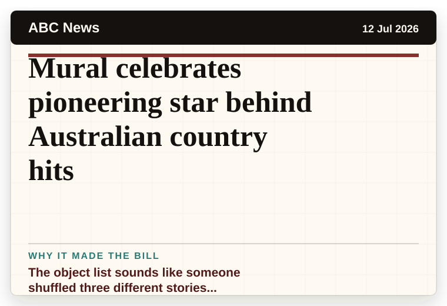
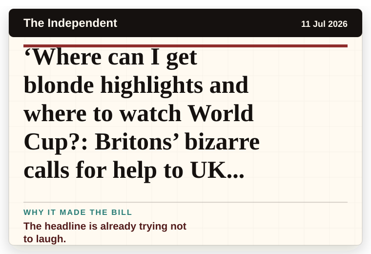
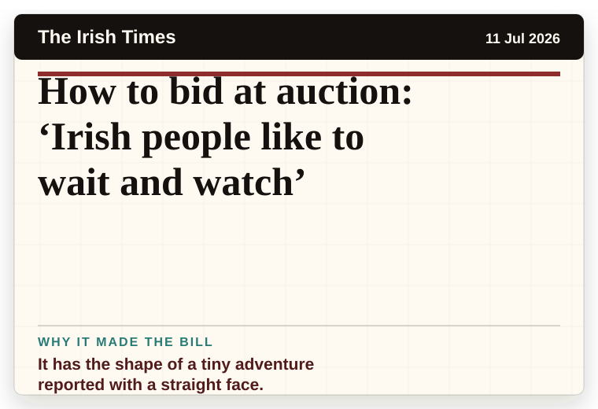
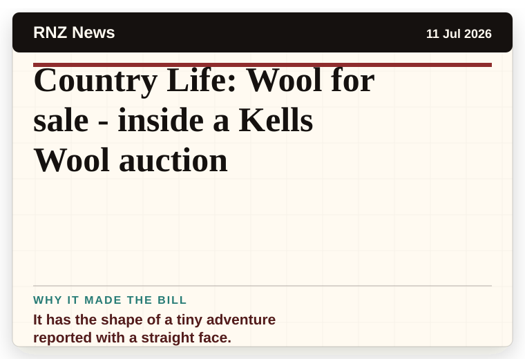

Daily Star Weird News
United Kingdom
White House release clearest UFO footage ever in biggest proof yet that aliens exist
A wonderfully specific detail has taken centre stage.
The latest daily picks, linked back to the original sources. Search the room, pick a source, or follow a headline out to the full story.
Record updated: 12 Jul 2026, 07:50 AM AEST
Showing 15 headline candidates from the refresh run completed on 12 Jul 2026, 07:50 AM AEST.
A wonderfully specific detail has taken centre stage.

The headline is already trying not to laugh.

The headline is already trying not to laugh.

It has the shape of a tiny adventure reported with a straight face.

A very ordinary object has wandered into serious news.

A mystery is doing a lot of work in a very small sentence.

A mystery is doing a lot of work in a very small sentence.

The scale is doing deadpan comedy.

The word chaos gives it open-mic energy.

The object list sounds like someone shuffled three different stories together.

The object list sounds like someone shuffled three different stories together.
A very ordinary object has wandered into serious news.

The headline is already trying not to laugh.

It has the shape of a tiny adventure reported with a straight face.

It has the shape of a tiny adventure reported with a straight face.